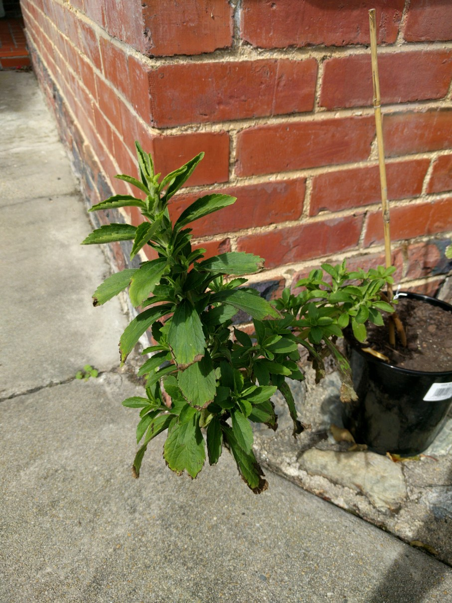

The leaves of Stevia are 20-30 times sweeter than can sugar but with extremely low calorie levels. Ideally suited for growing as a kitchen pot plant. Use the leaves directly for sweetening hot drinks. Sprinkle leaves in salads, cereals over meats and with cooked vegetables.
